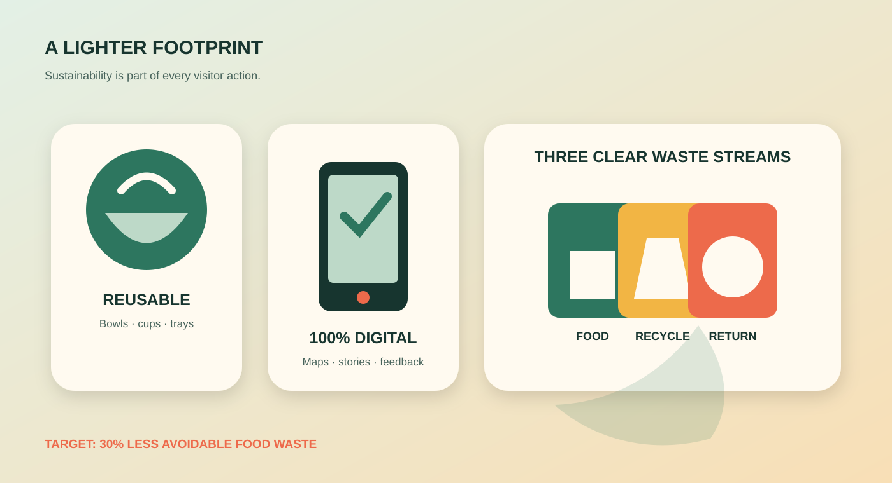

Digital information
Tickets, maps, recipes, stall stories, and feedback are online.
Sustainability results
The digital-first festival reduces printed material and builds practical waste prevention into the projected physical experience.

Designed for measurable impact
Because this website is the online festival outcome, the figures below are projected results for its physical KCGI setting. They can be measured when the festival format is used on campus.
Tickets, maps, recipes, stall stories, and feedback are online.
Target reduction through tasting portions and demand-based preparation.
One shared kit for each country stall, designed for future campus events.
Food scraps, recyclable packaging, and reusable serviceware.
Online invitations, recipes, maps, and feedback remove printed leaflets.
Samples let visitors try more cultures while reducing unfinished food.
Borrowed trays and washable cups replace disposable items.
Advance interest data helps hosts prepare realistic quantities.
Visible stations separate food scraps, recyclables, and reusable dishes.
Every stall includes a vegetarian option and highlights seasonal ingredients.